SECCIÓN 2D
SUSPENSIÓN TRASERA
ESPECIFICACIONES
Especificaciones para el apriete del afianzador
| Aplicación | N•m | Lb-pies |
| Pernos del amortiguador a la carrocería (superior) | 50 | 37 |
| Perno del amortiguador al eje (inferior) | 72 | 53 |
| Tuerca de biela del amortiguador | 20 | 15 |
| Tuerca de montaje del eje trasero | 115 | 85 |
| Perno del soporte de montaje del eje trasero | 70 | 52 |
| Tuerca de sujeción del husillo de cojinete de rueda trasera a eje | 80 | 59 |
| Tuerca calafateada del buje trasero | 190 | 140 |
LOCALIZADOR DE COMPONENTES
Suspensión trasera
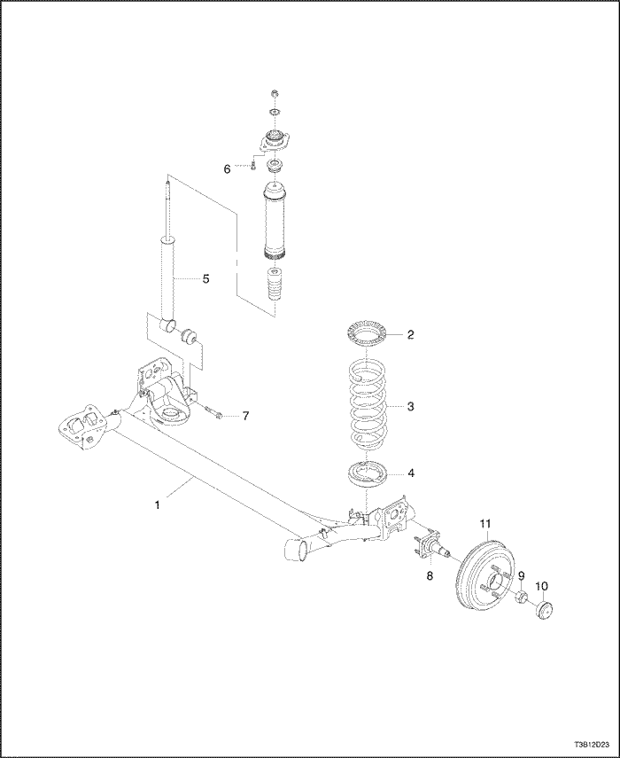


- EJE TRASERO
- Aislador superior del muelle
- Muelle espiral
- Aislador inferior del muelle
- Amortiguador
- Perno superior del amortiguador
- Perno inferior del amortiguador
- Husillo de cojinete de rueda
- Tuerca calafateada
- Tapa de huso
- Tambor de freno
HERRAMIENTAS ESPECIALES
Tabla de herramientas especiales

| KM-266-A Extractor |

| J-21474-18 Tuerca |

| J-21474-19 Perno de tirar/arandela de empuje |

| J-29376-A, Servicio del casquillo del brazo de control trasero Ajustar. Incluye: - J-29376-6A - Extractor/instalador del casquillo del brazo de control trasero
- J-29376-7 Placa del casquillo del brazo de control trasero
- J-29376-A Alojamiento del casquillo del brazo de control trasero
|

| J-36791 Instalador |
DIAGNÓSTICO
Prueba de fricción excesiva
Comprobar la fricción excesiva en la suspensión trasera de la siguiente manera:
- Con un ayudante, levantar el vehículo del parachoques trasero, tan alto como sea posible. Soltar lentamente el parachoques y dejar que el coche asuma su altura normal.
- Medir la distancia desde el piso al centro del parachoques.
- Presionar hacia abajo el parachoques y soltar lentamente para dejar que el coche asuma su altura normal.
- Medir la distancia desde el piso al centro del parachoques.
La diferencia entre las dos mediciones debe ser menor de 12,7 mm (0,50 pulg.). Si la diferencia es mayor a este límite, inspeccionar los brazos de control para detectar desgaste o daños.
MANTENIMIENTO Y REPARACIÓN
SERVICIO EN EL VEHÍCULO
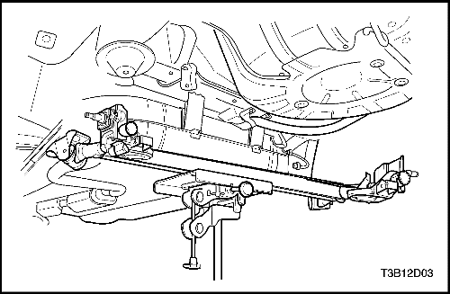
Amortiguador
Procedimiento de extracción
Aviso: Retirar solo un amortiguador cada vez cuando se sustituyen ambos amortiguadores. Cuando se suspende el eje trasero en toda su longitud se puede causar daño a las líneas y a las mangueras del freno.
- Retirar los pernos del amortiguador a la carrocería (superior).
Importante: Cuando se eleva el vehículo con un aparejo de carrocerías, se deberá soportar el eje trasero con gatos elevadores ajustables.
- Izar el vehículo y soportar el conjunto de eje trasero.
- Retirar el perno del amortiguador inferior al eje. Retirar el amortiguador
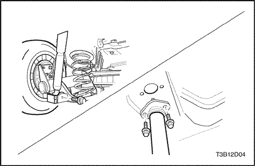
Procedimiento de instalación
Importante: Deberá poner el conjunto del eje en el ajuste de altura antes de apretar los pernos de sujeción del amortiguador.
- Insertar el perno del amortiguador inferior en el eje a través del soporte de sujeción inferior del amortiguador y el eje.
- Baje el vehículo lo suficiente para guiar el espárrago del amortiguador superior en la abertura de la carrocería e instalar sueltos los pernos de sujeción.
Apretar
Apretar el perno del amortiguador inferior al eje a 72 N•m (53 lb-pie), y el perno del amortiguador superior a la carrocería a 50 N•m (37 lb-pie).
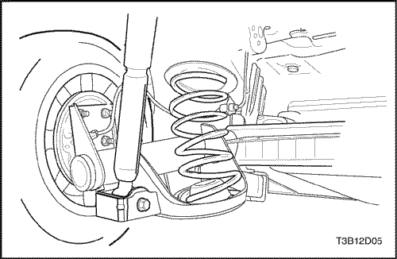
Muelles y aislantes
Precaución: Cuando quite los muelles traseros, no utilice aparejo del tipo de postes acoplados. La tendencia del conjunto del eje trasero a oscilar cuando se desmontan ciertos sujetadores podría hacer que se deslizara del aparejo. Esto podría causar lesiones personales. Realice la operación en el suelo si lo necesita.
Procedimiento de extracción
- Izar y soportar adecuadamente el vehículo. Utilizar un aparejo con armazón de contacto si se puede y soportar los brazos de control traseros con soportes regulables de altura. Si necesita izar el vehículo con un aparejo de postes acoplados, izar la carrocería y soportar los brazos de control con soportes regulables de altura.
- Retirar la rueda. Ver la Sección 2E, Neumáticos y ruedas.
- Retirar los pernos del amortiguador derecho e izquierdo. Ver "Amortiguador" en esta sección.
- Bajar el eje trasero y retirar los muelles y el aislante superior.
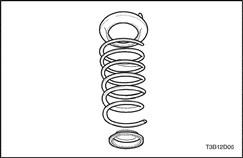
Procedimiento de instalación
Importante: Antes de instalar los muelles, deberá instalar los aislantes superiores a la carrocería con adhesivo y mantenerlos en posición mientras eleva el conjunto del eje y los muelles .
- Instalar el aislante superior y asentar el parachoques inferior.
- Instalar los muelles y levantar el eje.
- Instalar los amortiguadores. Ver "Amortiguador" en esta sección.
Importante: Deberá poner el conjunto del eje en el ajuste de altura antes de apretar los pernos de sujeción del amortiguador.
- Instalar la rueda. Ver la Sección 2E, Neumáticos y ruedas.
- Retirar los soportes regulables de altura y bajar el vehículo.
Conjunto de eje trasero
Procedimiento de extracción
- Izar y soportar adecuadamente el vehículo.
- Retirar las ruedas traseras. Ver la Sección 2E, Neumáticos y ruedas.
- Desmontar el freno de estacionamiento. Ver Sección 4G, Freno de estacionamiento.
- Desconectar la línea del sensor de ABS.
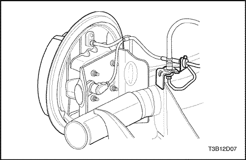
- Desconectar los tubos de freno de las mangueras de freno en los soportes del eje trasero quitando los tornillos de capucha y el clip de retención. Tapar o poner cinta en las aberturas de la manguera de freno para impedir que entre material extraño. Quitar el clip de la manguera de freno de los soportes del eje trasero. Ver Sección 4E, Frenos traseros de tambor.
- Colocar gatos elevadores bajo los brazos del eje trasero y elevar los brazos del eje trasero ligeramente. Retirar los amortiguadores. Ver "Amortiguadores"en esta sección.
- Retirar los amortiguadores. Ver "Amortiguadores" en esta sección.
- Bajar los gatos elevadores y retirar los muelles traseros. Ver "Muelles y aislantes"en esta sección.
- Retirar los pernos de montaje del eje trasero (izquierdo) y los pernos del soporte de montaje del eje trasero (derecho) del chasis inferior. Apalancar el eje trasero ligeramente con un destornillador, si lo necesita.
- Retirar el eje trasero.
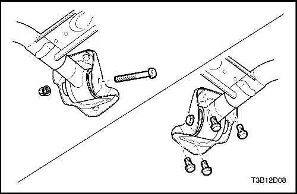
Procedimiento de instalación
- Izar el eje trasero y sujetarlo flojo a los montajes del chasis inferior del vehículo con el perno de soporte del eje trasero a la carrocería.
- Instalar los muelles y aislantes. Ver "Muelles y aislantes"en esta sección.
- Izar el brazo del eje trasero con los gatos elevadores. Sujetar el amortiguador al eje con el perno de sujeción inferior. Ver "Amortiguadores"en esta sección.
- Conectar las mangueras de presión del freno en el soporte del eje trasero. Instalar los clips de retención. Conectar los tubos de freno a las mangueras de freno. Purgue los frenos. Ver Sección 4E, Frenos traseros de tambor.
- Instalar el freno de estacionamiento. Ver Sección 4G, Freno de estacionamiento.
- Bajar el vehículo ligeramente e instalar las ruedas traseras. Ver la Sección 2E, Neumáticos y ruedas.
- A la altura del bordillo, apretar el perno de soporte del eje trasero a la carrocería (izquierdo) y los pernos del soporte de montaje del eje trasero (derecho).
Apretar
Apretar el perno de soporte del eje trasero a la carrocería a 115 N•m (85 lb-pie) y los pernos del soporte de montaje del eje trasero a 70 N•m (52 lb-pie).
- Ajuste los frenos de rueda trasera. Purgar el sistema de frenos y comprobar si hay fugas. Ver Sección 4E, Frenos traseros de tambor.
- Conectar la línea del sensor de ABS.
- Ajuste el freno de estacionamiento. Ver Sección 4G, Freno de estacionamiento.
- Bajar el vehículo completamente. Tuercas
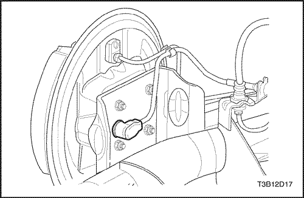
Husillo de cojinete de rueda
Procedimiento de extracción
- Izar y soportar adecuadamente el vehículo.
- Retirar la rueda. Ver la Sección 2E, Neumáticos y ruedas.
Aviso: No golpear el tambor del freno. Podría dañar el cojinete.
- Retirar el tambor de freno. Ver Sección 4E, Frenos traseros de tambor.
- Suelte el cable de freno de estacionamiento. Ver Sección 4G, Freno de estacionamiento.
- Desconectar la línea del sensor de ABS, si está equipado con ABS.
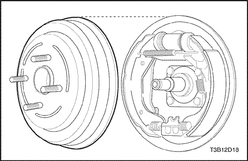
- Desmontar el husillo de cojinete de rueda. El conjunto de cojinete del buje está fijo en el tambor del freno y no es desmontable.
Procedimiento de instalación
Aviso: No debe realizarse un servicio en el conjunto de cojinete del buje independientemente del tambor. El conjunto del tambor debe sustituirse.
- Instalar el husillo de cojinete de rueda con las tuercas.
Apretar
Apretar las tuercas del husillo de cojinete de rueda a 80 N•m (59 Lb-pies).
- Conectar la línea del sensor de ABS.
- Instalar el tambor del freno y apretar el tornillo bloqueador del freno. Ver Sección 4E, Frenos traseros de tambor.
- Instalar la tuerca calafateada del buje trasero.
Apretar
Apretar la tuerca calafateada del buje trasero a 190 N•m (140 Lb-pies).
- Montar las ruedas traseras. Ver la Sección 2E, Neumáticos y ruedas.
- Ajuste el freno de estacionamiento. Ver Sección 4G, Freno de estacionamiento.
- Descender el vehículo.
REPARACIÓN DE LA UNIDAD
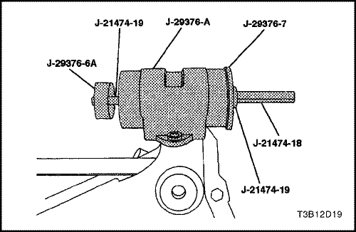
Bujes del brazo de control
Herramientas necesarias
KM-266-A Extractor
J-21474-18 Tuerca
J-21474-19 Perno de tirar/arandela de empuje
J-29376-A Alojamiento del cojinete del brazo de control
J-29376-6A - Extractor/instalador del casquillo del brazo de control trasero
J-29376-7 Placa del casquillo del brazo de control trasero
Procedimiento de desmontaje
- Izar y soportar adecuadamente el vehículo.
- Retirar el eje trasero y asegurarlo al banco de taller. Ver "Conjunto de eje trasero"en esta sección.
Aviso: Para facilitar el desmontaje de los cojinetes de amortiguación, calentar el eje trasero en el área de los cojinetes a aproximadamente 50 a 75°C (122 a 158°F) utilizando un secador de aire caliente industrial.
- Colocar el alojamiento del cojinete del brazo de control J-29376-A en el eje trasero. Deslizar el perno de tirar/arandela de empuje J-21474-19 a través del extractor/instalador del cojinete del brazo de control J-29376-6A, el cojinete del brazo de control trasero, la placa del cojinete del brazo de control J-29376-7 y dentro de la tuerca J-21474-18.
- Retirar parcialmente el cojinete del eje trasero girando la tuerca J-21474-18 y contrasujetar el perno de tirar J-21474-19.
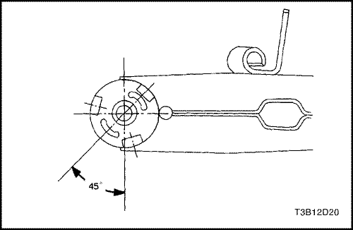
- Retirar el cojinete del eje trasero completamente golpeando el extractor/instalador del cojinete del brazo de control J-29376-6A con el extractor KM-266-A
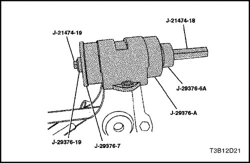
Procedimiento de montaje
- Colocar el alojamiento del cojinete del brazo de control J-29376-A en el eje trasero. Deslizar el perno de tirar J-21474-19 a través de la arandela de empuje J-1474-19, la placa del cojinete del brazo de control J-29376-7, el cojinete del brazo de control trasero, el extractor/instalador del cojinete del brazo de control J-29376-6A y dentro de la tuerca J-21474-18.
- Instalar el cojinete del eje trasero girando la tuerca J-21474-18 y contrasujetar el perno de tirar J-21474-19.
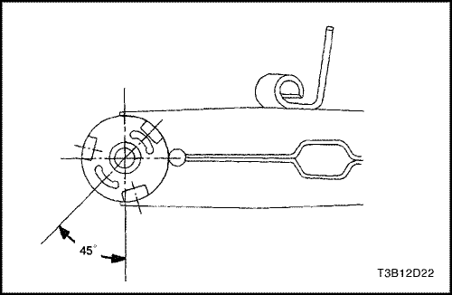
- Asegurar que el ángulo del cojinete está a 40 a 50 grados con el eje del eje trasero.
- Instalar el eje trasero. Ver "Conjunto de eje trasero"en esta sección.
- Descender el vehículo.
Eje trasero sin abs
Procedimiento de desmontaje
- Retirar el eje trasero. Ver "Conjunto de eje trasero"en esta sección
- Retirar el conjunto de buje y cojinete. Retirar el huso del eje trasero. Ver "Conjunto de buje y cojinete sin ABS" en esta sección.
- Retirar el conjunto de freno trasero. Ver Sección 4E, Frenos traseros de tambor.
- Retirar el árbol estabilizador. Ver "Estabilizador" en esta sección.
- Retirar los cojinetes del brazo de control. Ver "Brazo de control" en esta sección.
Procedimiento de montaje
- Instalar los cojinetes del brazo de control trasero. Ver "Brazo de control" en esta sección.
- Instalar el árbol estabilizador. Ver "Estabilizador" en esta sección.
- Instalar el conjunto del freno trasero. Ver Sección 4E, Frenos traseros de tambor.
- Cubrir ligeramente el huso de rueda con grasa de cojinete antifricción en el área de la placa de anclaje del freno. Instalar el huso y el conjunto de cojinete y buje. Ver "Conjunto de buje y cojinete sin ABS" en esta sección.
- Instalar el eje trasero. Ver "Conjunto de eje trasero"en esta sección
- Ajustar el cojinete de rueda. Ver "Ajuste del cojinete de rueda "en esta sección.
Eje trasero con abs
Procedimiento de desmontaje
- Retirar el eje trasero. Ver "Conjunto de eje trasero"en esta sección
- Retirar el conjunto de buje y cojinete. Ver "Conjunto de buje y cojinete sin ABS" en esta sección.
- Retirar el conjunto de freno trasero. Ver Sección 4E, Frenos traseros de tambor.
- Retirar el árbol estabilizador. Ver "Estabilizador" en esta sección.
- Retirar los cojinetes del brazo de control. Ver "Brazo de control" en esta sección.
Procedimiento de montaje
- Instalar los cojinetes del brazo de control trasero. Ver "Brazo de control" en esta sección.
- Insertar el árbol estabilizador en el nuevo eje trasero y atornillar el eje en su lugar. Ver "Estabilizador" en esta sección.
- Instalar el conjunto del freno trasero. Ver Sección 4E, Frenos traseros de tambor.
- Instalar el conjunto de buje y cojinete. Ver "Conjunto de buje y cojinete sin ABS" en esta sección.
- Instalar el eje trasero. Ver "Conjunto de eje trasero con ABS"en esta sección.
DESCRIPCIÓN GENERAL Y FUNCIONAMIENTO DEL SISTEMA
Suspensión trasera
Descripción general
La suspensión trasera consiste de un eje con ejes de salida y un travesaño retorcido, dos muelles espirales, dos amortiguadores, dos aislantes de muelle superior, y dos parachoques de compresión del muelle. El conjunto de soporte del eje se acopla al chasis inferior con un casquillo de goma situado en el frente de cada uno de los brazos de control. Los soportes son integrales con los rieles laterales del chasis inferior. La estructura del eje mantiene la relación de las ruedas con la carrocería. Un árbol estabilizador fácil de mantener, incorporado con la viga del eje, se acopla a cada uno de los brazos de control.
Cada muelle espiral está retenido entre un asiento en el chasis inferior y un asiento soldado en la parte superior del brazo de control del eje trasero. El extremo inferior del muelle espiral descansa en un parachoques de comprensión en el soporte soldado en la parte superior del eje trasero, mientras que se usa un aislante de goma para aislar el extremo superior del muelle espiral del asiento del chasis inferior del vehículo.